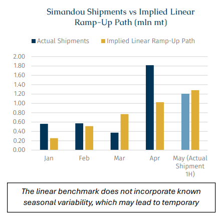
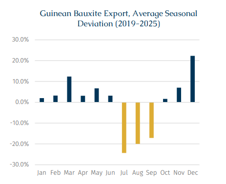
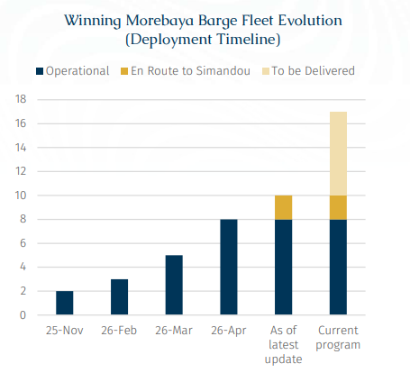

According to AXSMarine data, iron ore shipments from Guinea’s Simandou project shipped via its export outlet at the port of Morebaya hit 1.82mln mt in April, significantly above the first quarter of this year. Indeed April may have represented the first truly meaningful milestone since the project’s initial commissioning, as total exports from Morebaya during Q1 stood at only 1.51mln mt.
Looking back over the past six months, while Simandou’s ramp-up has inevitably gone through a period of operational adjustment, the recent increase in exports has, to some extent, eased earlier market concerns regarding the project’s operating efficiency. Meanwhile, the export momentum appears to have continued into May, with preliminary data implying that exports during the first half of the month already surpassed 1mln mt. This therefore suggests that the project’s supply chain is gradually becoming more stable.
As one of the most closely watched new iron ore projects in recent years, Simandou is widely regarded as one of the world’s largest undeveloped high-grade iron ore resources. Under current development plans, the project’s long-term annual production capacity is expected to reach around 120mln mt by 2030, while market expectations for exports in 2026 have generally been around 20mln mt. However, beyond the scale of the resource itself, the project’s heavy reliance on rail transportation, river barging and offshore transshipment has also led the market to remain cautious regarding potential supply chain bottlenecks.
The surge in April was supported both by the gradual improvement in operational coordination following commissioning and by a relatively stable iron ore pricing environment. In addition, concerns earlier this year over potential diesel supply constraints in Guinea, which some market participants had viewed as a possible limiting factor for mining activity, have so far eased, with fuel suppliers maintaining relatively stable deliveries to the sector (for a more detailed discussion, please refer to Weekly Dry Bulk Newsletter Issue 214). However, among these factors, the most important marginal change has come from the continued expansion of barge capacity.
According to Signal Ocean data, a total of eight barges are currently involved in transporting iron ore between Morebaya and the offshore anchorage, compared with only two barges in operation when the project first started late last year. Each barge, with actual cargo liftings typically around 10,000 mt per voyage, can generally complete one round trip within approximately 24 hours, meaning that the increase in barge numbers has a direct impact on the theoretical throughput capacity of the entire logistics chain. More importantly, five of the eight barges currently operating only commenced operation in March and April. The continued increase in barge numbers has not only expanded ship-to-ship capacity itself, but more importantly has also gradually alleviated what had previously been one of the key bottlenecks constraining the project’s exports.
As additional barges entered service, to some extent, the higher shipments also helped ease earlier market concerns regarding the project’s ramp-up pace. Based on consensus market expectations for approximately 20mln mt of exports this year, even under a relatively idealized linear growth assumption, monthly shipments by April would theoretically only need to average around 1mln mt. Recent shipment performance, however, suggests that Simandou’s actual ramp-up pace has already exceeded this theoretical level.

Nevertheless, while market sentiment has gradually improved, the approaching West African rainy season could still become the next major test for Simandou’s supply chain. In Guinea, the rainy season typically begins around May and lasts until October, with rainfall usually peaking between July and August.

Historical experience of Guinea’s bauxite exports suggests that the rainy season often creates noticeable disruptions across the country’s mining logistics chain. According to AXSMarine statistics covering Guinea’s monthly bauxite exports between 2019 and 2025, export volumes during the rainy season were on average around 20% lower than annual average levels.
This pronounced seasonal pattern suggests that even for bauxite, a relatively mature export industry in Guinea that has undergone years of development, the broader logistics chain still displays clear sensitivity to adverse weather conditions. During the rainy season, rougher sea conditions may complicate ship to ship operations and significantly reduce loading/discharging efficiency, while certain inland transportation routes can also become more difficult to operate under heavy rainfall. As a result, weather-related disruptions often emerge simultaneously across multiple parts of the logistics chain, creating a more challenging export environment at the system level.
Therefore, although the stronger shipment data in April improves market confidence, it remains uncertain whether the current shipment pace will be sustainable for the full year. To some extent, the recent strong export performance may itself have benefited from the dry season window, with operators incentivized to maximize exports during periods of relatively stable weather conditions.
Looking ahead, compared with absolute shipment volumes, the system’s stability and resilience during periods of logistical stress may ultimately become the more important factor shaping long-term market expectations. While the rainy season could create short-term disruptions to shipment flows, the continued recent improvement seen in logistical efficiency still suggests that Simandou’s supply chain is gradually moving toward a more mature operating structure.
At the same time, the project’s barging system itself still appears to have further room for expansion. According to BRS data, the current phase of the Winning Morebaya barge program is expected to consist of 17 barges in total. Based on vessel tracking data, in addition to the eight barges currently operating, two newly delivered barges are still en route from Chinese shipyards to West Africa, while the remaining barges are also scheduled for delivery from two Chinese shipyards (Yizheng Kanping and Jiangsu Islands) later this year. For a project that remains highly dependent on inland river transportation, the gradual addition of more barges could continue to improve transportation efficiency, turnaround capacity and the overall resilience of the logistics chain. Nevertheless, as the overall export system continues to scale up, the availability and stability of supporting infrastructure, including fuel supply, may remain an important area to monitor going forward, particularly for a logistics chain that is still in the process of ramping up.
